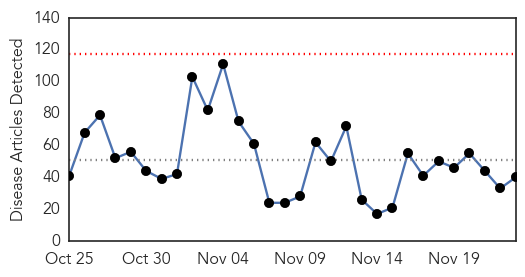
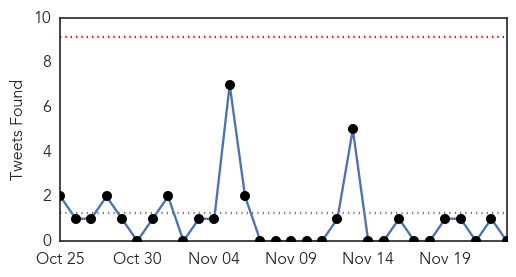
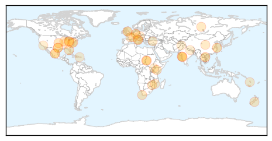
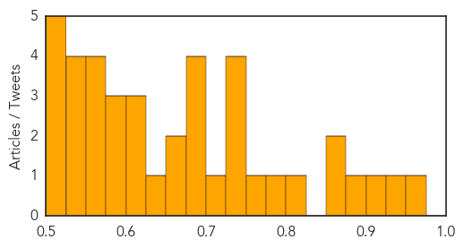

Toggle navigation
Early Warning
Daily Alerts
Unknown
Nov 23, 2015
Compare to:
-
Dengue Fever
Hemmorhagic Fever
Mold/Fungal Infection
Influenza
Meningitis
Pertussis / Whooping Cough
Middle East Respiratory Syndrome
Cholera
Hepatitis
Chikungunya
Yellow Fever
Bubonic Plague
West Nile Virus
Swine Flu
Ebola
Measles
Mumps
30 Day Trends
Web: 0
alerts
, 0
warnings
Twitter: 0
alerts
, 0
warnings
Top Articles:
0.974
How your family can fight the flu this winter
0.950
SGGP English Edition- Ministry warns parents to take recommended polio immunization schedule
0.909
Alert issued over infectious diseases
0.898
Chipotle E. coli outbreak reaches 6 states, shares tumble
0.872
German Pharma Provides Nigeria $5m Worth Of Drugs To Tackle Schistosomiasis
0.866
Texas student arrested over clock seeks millions from city, schools
0.815
United States sexually transmitted disease epidemic worsening
0.788
Coli outbreak linked to Chipotle
0.755
F.D.A. Targets Inaccurate Medical Tests, Citing Dangers and Costs
0.747
Rise of killer superbugs continues
0.741
Legionnaire’s lingers at Bay Pines but experts say there is little danger
0.737
CDC updates case count from Salmonella tainted cucumbers
0.734
Makerere scientists tackle swine fever
0.722
Coli outbreak now covers six states
0.696
ASF concern strikes Finland
0.689
Health Warning – Algal Bloom in Selwyn/Waikirikiri River
0.685
Kala-azar on the rise among North Darfur displaced - Sudan
0.682
Poor road network cuts out villagers from maternal health centres
0.666
Baxalta recibe una opinión positiva del CHMP para el uso de ONCASPAR (pegaspargase) en toda la Unión Europea como componente de una terapia combinada para casos de leucemia linfoblástica aguda (LLA)
0.651
Chinese medical team facilitates outreach at Suddie Hospital
0.643
News in Brief 23 November 2015 (PM)
0.609
UN says El Niño getting worse in Pacific
0.607
The Villager-Namibia reluctant on HIV vaccine trial
0.603
EU invites Turkey to talks on migration, bilateral ties
0.596
Ohio Department Of Health Accredited In National Program
0.592
Aids control society to register pregnant HIV positive women
0.584
Ethiopia's National School-Based Deworming Programme To Treat 16.5 Million
0.573
Chipotle-linked E. coli reported in three more states
0.566
French far-right sees popularity rise after Paris attacks
0.566
Dominican Republic issues arrest warrant for French MEP in 'Air Cocaine' case
0.555
Miller Children’s Hospital celebrates 20 years of zero mother-baby HIV transmissions
0.546
State to fight TB cases with a new committee
0.544
Columbus 'didn't bring syphilis to Europe': study
0.533
Current Affairs 2015-2016
0.527
'Kissing bug' infections still a problem in Texas
0.522
Feature: "100 days of Suffering" rally highlights health sector crisis in Nepal - Xinhua
0.518
Bluetongue Outbreaks Expand into More European Countries
0.516
Kenyan patients overwhelm Karamoja
0.516
The 12 Steps Health Systems Can Take to Achieve Population Health Management
0.511
Roundup: 3 data breaches, one settlement
Top Tweets:
No tweets found for Nov 23, 2015
Web/News Articles

Tweets

Article Locations

Article Confidences
